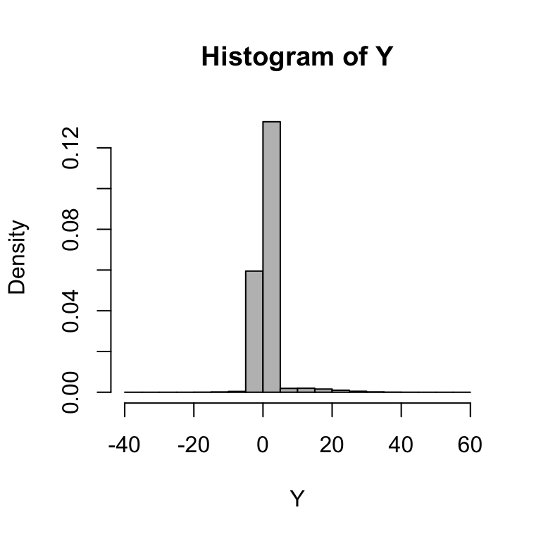

Chapter 17 Design, analysis, and presentation of simulation results
You have all the pieces for writing simulations, but this still leaves open of what simulation should you run, and how do you present the results once you are finished.
17.1 Designing the simulation experiment
Recall the following design principles and acknowledgements:
- The primary limitation of simulation studies is generalizability.
- Choose conditions that allow you to relate findings to previous work.
- Err towards being comprehensive.
- The goal should be to build an understanding of the major moving parts.
- Presentation of results can always be tailored to illustrate trends.
- Explore breakdown points (e.g., what sample size is too small for applying a given method?).
17.2 Choosing parameter levels
You generally want to vary parameters that you believe matter, or that you think other people will believe matter. The first is so you can learn. The second is to build your case.
Once you have identified your parameters you then have to decide on the levels of the parameter you will include in the simulation. There are three strategies you might take:
- Vary a parameter over its entire range (or nearly so).
- Choose parameter levels to represent realistic practical range.
- Empirical justification based on systematic reviews of applications
- Or at least informal impressions of what’s realistic in practice
- Choose parameters to emulate one important application.
In the above (1) is the most general—but also the most computationally intensive. (2) will focus attention, ideally, on what is of practical relevance to a practitioner. (3) is usually coupled with a subsequent applied data analysis, and in this case the simulation is often used to enrich that analysis. For example, if the simulation shows the methods work for data with the given form of the target application, people may be more willing to believe the application’s findings.
Regardless of how you select your primary parameters, you should also vary nuisance parameters (at least a little) to test sensitivity of results. While simulations will (generally) never be fully generalizable, you can certainly make them so they avoid the obvious things a critic might identify as an easy dismissal of your findings.
17.3 Presentation
Your results have finished running…what now?
- Understand the effects of all of the factors manipulated in the simulation
- Develop evidence that addresses your research questions
Three approaches to analysis and presentation:
- Tabulation
- Visualization
- Modeling
17.4 Tabulation
Traditionally, simulation study results are presented in big tables. Tables are fine if…
- they involve only a few numbers, and a few targeted comparisons
- it is important to report exact values for some quantities
But simulations usually produce lots of numbers, and involve making lots of comparisons.
- relative performance of alternative estimators
- performance under different conditions for the data-generating model
Exact values for bias/RMSE/type-I error are not usually of interest. And in fact, we rarely have them due to Monte Carlo simulation error.
It is often more useful and insightful to present results in graphs (Gelman, Pasarica, & Dodhia, 2002).
17.5 Visualization
Visualization should nearly always be the first step in analyzing simulation results.
This often requires creating a BUNCH of graphs to look at different aspects of the data.
Helpful tools/concepts:
- Boxplots are often useful for depicting range and central tendency across many combinations of parameter values.
- Use color, shape, and line type to encode different factors
- Small multiples (faceting) can then encode further factors (e.g., varying sample size)
17.5.1 Example 1: Biserial correlation estimation
Our first example shows the bias of a biserial correlation estimate from an extreme groups design. This simulation was a \(96 \times 2 \times 5 \times 5\) factorial design (true correlation for a range of values, cut-off type, cut-off percentile, and sample size). The correlation, with 96 levels, forms the \(x\)-axis, giving us nice performance curves. We use line type for the sample size, allowing us to easily see how bias collapses as sample size increases. Finally, the facet grid gives our final factors of cut-off type and cut-off percentile. All our factors, and near 5000 explored simulation scenarios, are visible in a single plot.
## `geom_smooth()` using formula 'y ~ x'
Source: Pustejovsky, J. E. (2014). Converting from d to r to z when the design uses extreme groups, dichotomization, or experimental control. Psychological Methods, 19(1), 92-112.
Note that in our figure, we have smoothed the lines with respect to rho using geom_smooth().
This is a nice tool for taking some of the simulation jitter out of an analysis to show overall trends more directly.
17.5.2 Example 2: Variance estimation and Meta-regression
- Type-I error rates of small-sample corrected F-tests based on cluster-robust variance estimation in meta-regression
- Comparison of 5 different small-sample corrections
- Complex experimental design, varying
- sample size (\(m\))
- dimension of hypothesis (\(q\))
- covariates tested
- degree of model mis-specification

Source: Tipton, E., & Pustejovsky, J. E. (2015). Small-sample adjustments for tests of moderators and model fit using robust variance estimation in meta-regression. Journal of Educational and Behavioral Statistics, 40(6), 604-634.
17.5.3 Example: Heat maps of coverage
The visualization below shows the coverage of parametric bootstrap confidence intervals for momentary time sampling data In this simulation study the authors were comparing maximum likelihood estimators to posterior mode (penalized likelihood) estimators of prevalence. We have a 2-dimensional parameter space of prevalence (19 levels) by incidence (10 levels). We also have 15 levels of sample size.
One option here is to use a heat map, showing the combinations of prevelance and incidence as a grid for each sample size level. We break coverage into ranges of interest, with green being “good” (near 95%) and yellow being “close” (92.5% or above). For this to work, we need our MCSE to be small enough that our coverage is estimated precisely enough to show structure.


To see this plot IRL, see Pustejovsky, J. E., & Swan, D. M. (2015). Four methods for analyzing partial interval recording data, with application to single-case research. Multivariate Behavioral Research, 50(3), 365-380.
17.6 Modeling
Simulations are designed experiments, often with a full factorial structure. We can therefore leverage classic means for analyzing such full factorial experiment. In particular, we in effect model how a performance measure varies as a function of the different experimental factors. We can use regression or other modeling to do this.
First, in the language of a full factor experiment, we might be interested in the “main effects” or “interaction effects.” A main effect is whether, averaging across the other factors in our experiment, a factor of interest systematically impacts our peformance measure. When we look at a main effect, the other factors help ensure our main effect is generalizable: if we see a trend when we average over the other varying aspects, then we can state that for a host of simulation contexts, grouped by levels of our main effect, we see a trend.
For example, consider the Bias of biserial correlation estimate from an extreme groups design example from above. Visually, we see that most factors appear to matter for bias, but we might want to get a sense of how much. In particular, does the the population vs sample cutoff option matter, on average, for bias?
options(scipen = 5)
mod = lm( bias ~ fixed + rho + I(rho^2) + p1 + n, data = r_F)
summary(mod, digits=2)##
## Call:
## lm(formula = bias ~ fixed + rho + I(rho^2) + p1 + n, data = r_F)
##
## Residuals:
## Min 1Q Median 3Q Max
## -0.0215935 -0.0013608 0.0003823 0.0015677 0.0081802
##
## Coefficients:
## Estimate Std. Error t value Pr(>|t|)
## (Intercept) 0.00218473 0.00015107 14.462 < 2e-16 ***
## fixedSample cutoff -0.00363520 0.00009733 -37.347 < 2e-16 ***
## rho -0.00942338 0.00069578 -13.544 < 2e-16 ***
## I(rho^2) 0.00720857 0.00070868 10.172 < 2e-16 ***
## p1.L 0.00461700 0.00010882 42.426 < 2e-16 ***
## p1.Q -0.00160546 0.00010882 -14.753 < 2e-16 ***
## p1.C 0.00081464 0.00010882 7.486 8.41e-14 ***
## p1^4 -0.00011190 0.00010882 -1.028 0.3039
## n.L 0.00362949 0.00010882 33.352 < 2e-16 ***
## n.Q -0.00103981 0.00010882 -9.555 < 2e-16 ***
## n.C 0.00027941 0.00010882 2.568 0.0103 *
## n^4 0.00001976 0.00010882 0.182 0.8559
## ---
## Signif. codes: 0 '***' 0.001 '**' 0.01 '*' 0.05 '.' 0.1 ' ' 1
##
## Residual standard error: 0.003372 on 4788 degrees of freedom
## Multiple R-squared: 0.5107, Adjusted R-squared: 0.5096
## F-statistic: 454.4 on 11 and 4788 DF, p-value: < 2.2e-16The above printout gives main effects for each factor, averaged across other factors. It is automatically generating linear, quadradic, cubic and fourth order contrasts for the ordered factors of p1 and n. We see that, across other contexts, the sample cutoff is around 0.004 lower than population.
We next discuss two additional tools:
- ANOVA can be useful for understanding major sources of variation in simulation results (e.g., identifying which factors have negligible/minor influence on the bias of an estimator).
- Smoothing (e.g., local linear regression) over continuous factors
anova_table <- aov(bias ~ rho * p1 * fixed * n, data = r_F)
summary(anova_table)## Df Sum Sq Mean Sq F value Pr(>F)
## rho 1 0.002444 0.002444 1673.25 <2e-16 ***
## p1 4 0.023588 0.005897 4036.41 <2e-16 ***
## fixed 1 0.015858 0.015858 10854.52 <2e-16 ***
## n 4 0.013760 0.003440 2354.60 <2e-16 ***
## rho:p1 4 0.001722 0.000431 294.71 <2e-16 ***
## rho:fixed 1 0.003440 0.003440 2354.69 <2e-16 ***
## p1:fixed 4 0.001683 0.000421 287.98 <2e-16 ***
## rho:n 4 0.002000 0.000500 342.31 <2e-16 ***
## p1:n 16 0.019810 0.001238 847.51 <2e-16 ***
## fixed:n 4 0.013359 0.003340 2285.97 <2e-16 ***
## rho:p1:fixed 4 0.000473 0.000118 80.87 <2e-16 ***
## rho:p1:n 16 0.001470 0.000092 62.91 <2e-16 ***
## rho:fixed:n 4 0.002929 0.000732 501.23 <2e-16 ***
## p1:fixed:n 16 0.001429 0.000089 61.12 <2e-16 ***
## rho:p1:fixed:n 16 0.000429 0.000027 18.36 <2e-16 ***
## Residuals 4700 0.006866 0.000001
## ---
## Signif. codes: 0 '***' 0.001 '**' 0.01 '*' 0.05 '.' 0.1 ' ' 1library(lsr)
etaSquared(anova_table)## eta.sq eta.sq.part
## rho 0.021971037 0.26254289
## p1 0.212004203 0.77453319
## fixed 0.142527898 0.69783705
## n 0.123670355 0.66710072
## rho:p1 0.015479114 0.20052330
## rho:fixed 0.030918819 0.33377652
## p1:fixed 0.015125570 0.19684488
## rho:n 0.017979185 0.22560369
## p1:n 0.178055588 0.74260975
## fixed:n 0.120065971 0.66049991
## rho:p1:fixed 0.004247472 0.06439275
## rho:p1:n 0.013216569 0.17638308
## rho:fixed:n 0.026326074 0.29902214
## p1:fixed:n 0.012839790 0.17222072
## rho:p1:fixed:n 0.003857877 0.0588338917.7 Presentation
- Present selected results that clearly illustrate the main findings from the study and anything unusual/anomolous.
- In the text of your write-up, include examples that make specific numerical comparisons.
- Include supplementary materials containing
- additional figures and analysis
- complete simulation results
- reproducible code for running the simulation and doing the analysis